Fruit mods allow you to feed your Chao tasty custom food, that give custom effects to your Chao as well. We will create a model, assign the model to the black market, give the fruit a custom function, and set up the prices and effects of the fruit to the Chao.
Open Blender, and create your fruit. For example, I'll make a pear. Follow standard 3D modelling practices while making the fruit, and don't worry too much about what polygons your fruit should be made out of. The model will be auto-triangulated on export. There's a vertex limit of 32768, but try to work in the visual style of the game, since you would want the fruit to look consistent with the world you're in.
Delete the point light and the camera, otherwise your game may crash!
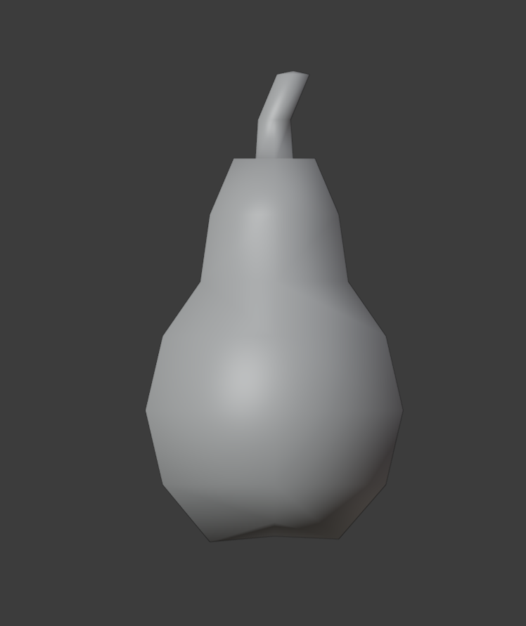Once done, make sure your fruit is aligned at the origin of 0 on the X, Y, and Z axis.
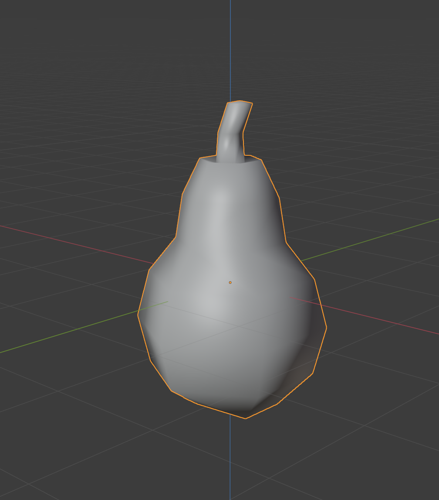Select the fruit, go to the tools menu in the properties panel, and go to SA Tools->Update Materials. This creates an SA2Shader node group that will allow us to texture preview the model inside Blender itself. Make sure to select the material for you used for the model (or create one if you haven't) in material properties to see the fruit turn magenta. This is normal since we have not textured the fruit yet.
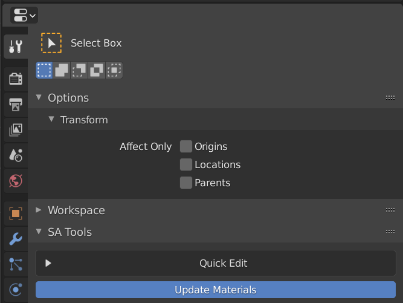Go to the Texture Paint tab, and click the "new" button on top. This will make a new texture for the model. Make the size at most 128x128 (recommended - going higher would allow for higher quality, but at the cost of performance and size of mod) and then assign the texture to the model.
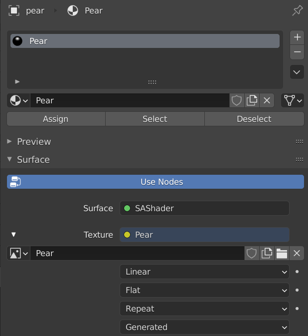In the texture assignment, go to the SA Tools settings and set your texture ID - texture ID should be 0 for your first fruit, and additional fruit or textures must increment the texture ID by 1 so that the model can be appropriately mapped
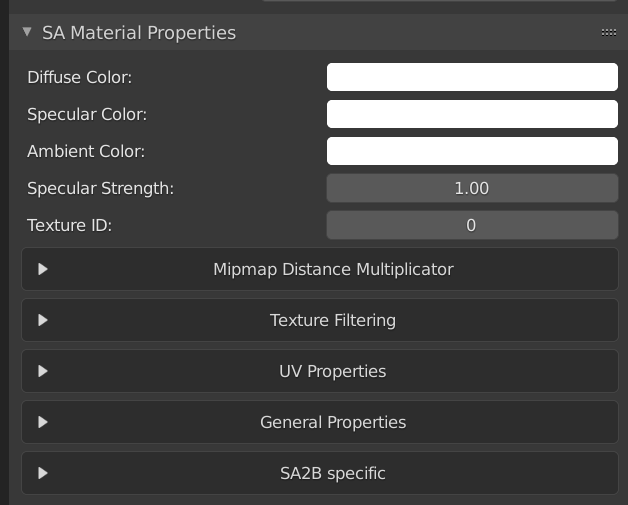Go to the UV editing tab, select all of your hat's vertices (A), and UV map it (either by pressing U, selecting Smart UV Project or by clicking UV, Smart UV Project)
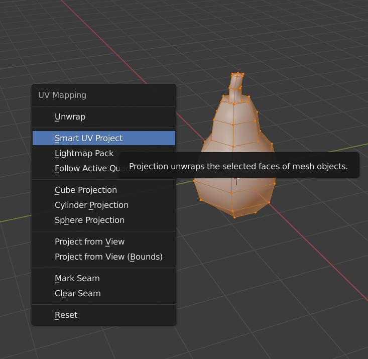Adjust the UVs as you would like. Once done, go to the UV editor pane on the left, and go to UV->Export UV Layout. This will allow you to export your UVs so that you can use an external application (like Photoshop) to UV paint your model. Below, you will see my re-arranged UVs for the pear I created.
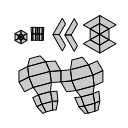Paint the fruit as you like, and save the fruit (as well as the texture). Once done, we can continue to the code section of the mod! Export your model as an SA2MDL file and then close Blender.
Open your VS project folder and download and extract the archive for the API code here into the project folder. This will include the base code, as well as any additional dependencies outside of the SA2 Programming code required to make the project complete. Add the Main.cpp file to your project and open it. There are a few things we will need to cover for fruit before we can add them to the Black Market themselves.
int ExampleFruitID;
This provides the fruit with an ID to the custom fruit API in CWE.
void __cdecl CustomFruitFunc(ChaoData* data, ObjectMaster* fruit)
{
}
Note: This needs to be created for custom functionality, but if you don't add the function you can insert NULL in the Function parameter instead of using a CustomFruitFunc. NULLing the parameter means that only the stats will be given, and nothing else.
This is where the last bite of the Chao Fruit would change attributes, like personality, behavior, or emotions. You'll find the attributes in data->data. Be sure to manually clamp the values in these functions. Use the DCFruits source to see how clamping was done there. When the CWE API allows for it, this will update to functions that handle this for you.
ChaoItemStats ExampleStats = { 0,0,0,0,0,0,0,0,0,0 }This creates the stats for the Chao, and divides the stats according to the bites the Chao takes. Note the comment next to the example code which tells you what the order of operations is.
Go to the CWELoad() function, and have a look at the following:
void CWELoad()
{
//Texture list - Change the name for making different custom textures.
RegisterChaoTexlistLoad("examplefruit", &texlist_CUSTOMFRUIT);
//Register the fruit ID to the fruit list - should start at 34 before DCFruits gets initialized, or 36 after.
ExampleFruitID = RegisterFruit("example.sa2mdl", 1000, 250, CustomFruitStats, CustomFruitFunc, "Example Fruit", "Example fruit description");
//give the fruit a chance to spawn, 50% is standard in DCFruits
ItemChance ExampleFruitChance{ExampleFruitID, 50};
//Register the fruit
RegisterBlackMarketGeneralFruit(&ExampleFruitChance);
}
RegisterChaoTexlistLoad defines the name of your texture file (in this case it's examplefruit.pak, change it so it doesn't mess with any other fruit mods.)
the RegisterFruit function gives you access to register your fruit we made in the previous section. You can add as many fruit as you like using this line of code, limited to 255 fruit. Note that other fruit mods share this limit, and if you do reach the limit, the game will rash when trying to load one of the fruit in the Black Market.
the syntax for the RegisterFruit is as follows: RegisterFruit("filename",buy price, sell price, the stats struct instance we created above, the custom function we created above, "Name of Fruit", "Description for Black Market");
Create an instance for ItemChance for your Fruit. This gives the fruit a chance to spawn in the Black Market. 50% is the default in DCFruits mod, so I usually go for that.
finally, choose where you want to register the fruit. RegisterBlackMarketGeneralFruit places the fruit where the shaped fruit usually is, while RegisterBlackMarketRareFruit places the fruit where Hyper Fruit, Mint Candy, and mushrooms would spawn. Don't forget to assign the address of (& operator with the variable name) the chance of the fruit you are making, otherwise this will not work and throw an error on compile!
Drag and drop the ModelInfo.h and ModelInfo.cpp files into the "Source Files" folder in your Solution explorer. (These dependencies generally throw linker errors if not added this way for me, so let me know if this is an issue for you)
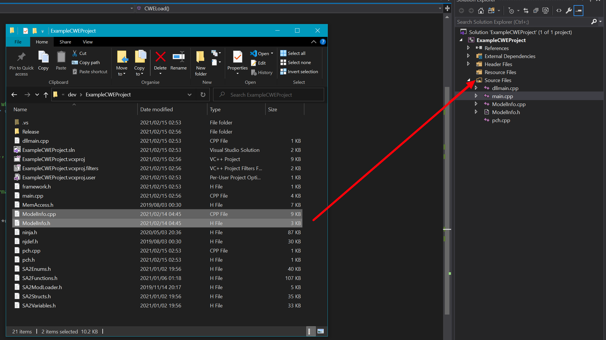Click the build configuration dropdown and select "Release" and select from the solution platform "x86", then build your project by pressing F6 or going to "Build -> Build Project. If all goes well, the build should be completed and a "Release" folder should appear in your project folder with the project name DLL inside.
Close VS, and open SA Tools TextureEditor. Click the "add" button and add your fruit texture.
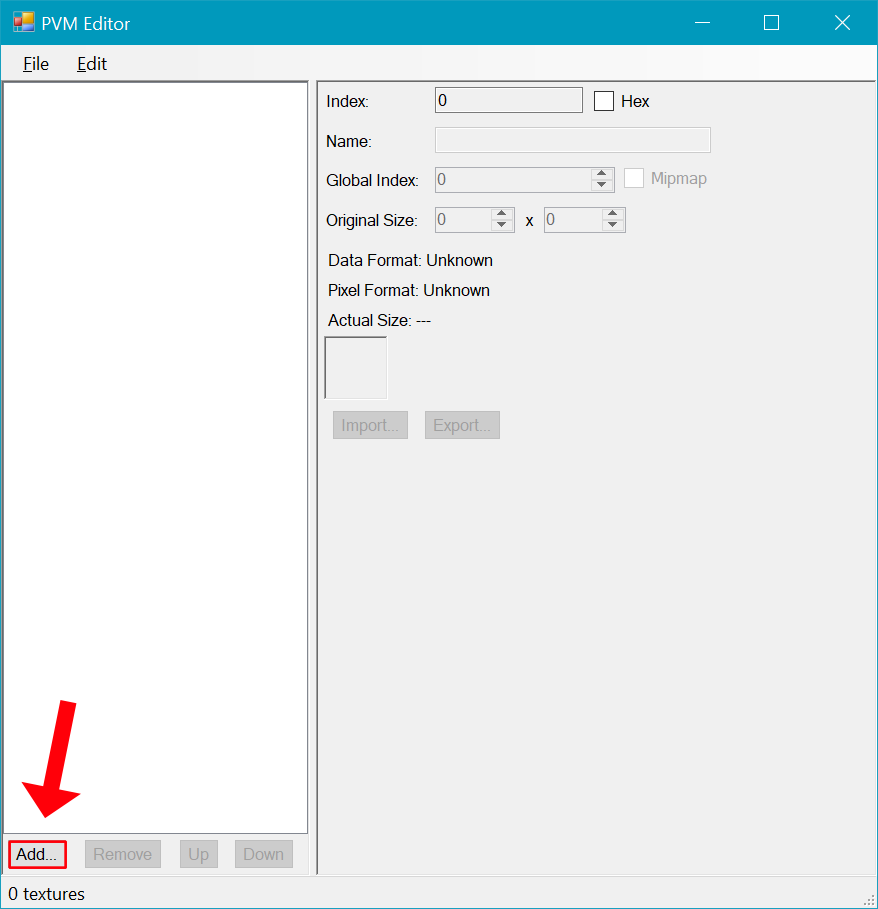Select your fruit texture you added, and set the Global Index to something unique. Anywhere around 150000 will be fine.
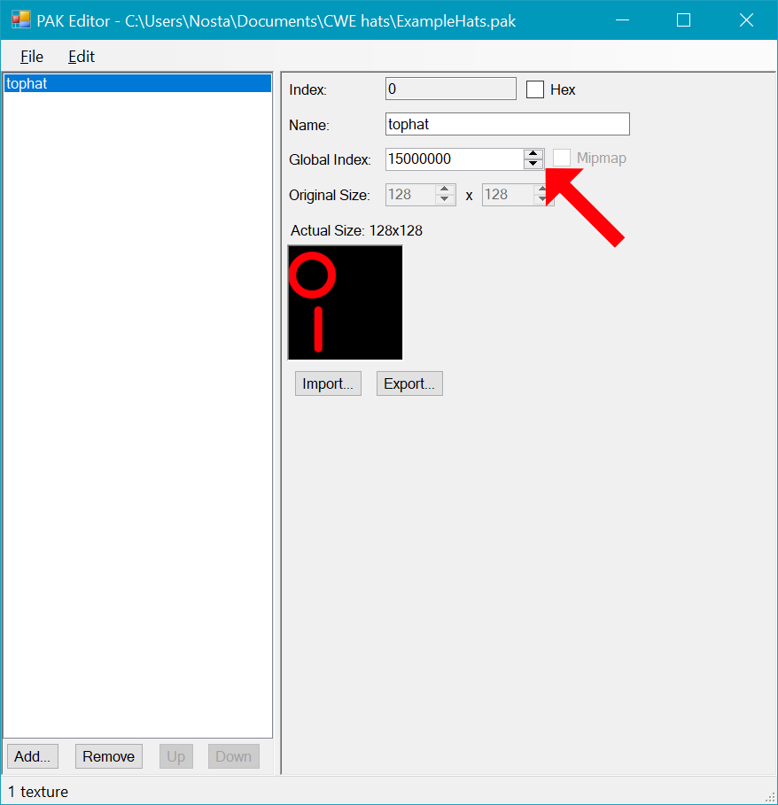Save your fruit texture that you added as .PAK, as what you set your RegisterChaoTexlistLoad filename as. Save it somewhere accessible so you can place it in your mod soon.
We are now done with the mod creation process. Let's package up the mod and get it ready for shipping.
We're finally at the endgoal of this project. This is usually where issues will get picked up, so we will test the mod as we go along finalizing the mod.
Add your DLL file from the "Release" folder to your mod project folder.
Inside your mod project folder, create a gd_PC folder, and inside the gd_PC folder, add a PRS folder. Copy your .PAK texture file from the last section to the PRS folder.
Open your mod.ini file and add the filename of your DLL file to the DLLFile= property we made in the DLL Project setup. Save and close the file.
Now, in your SA2 Modloader, find your mod and check it. Make sure your mod is beneath Chao World Extended to work - Chao World Extended is a required prerequisite to this process, so it must be at the top of your list.
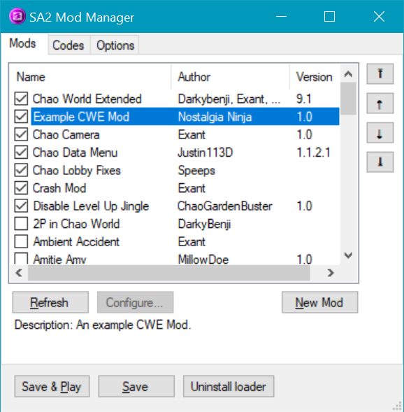Click Save, and close the Modloader, then run Sonic Adventure 2. Cycle your Black Market until you find the fruit.
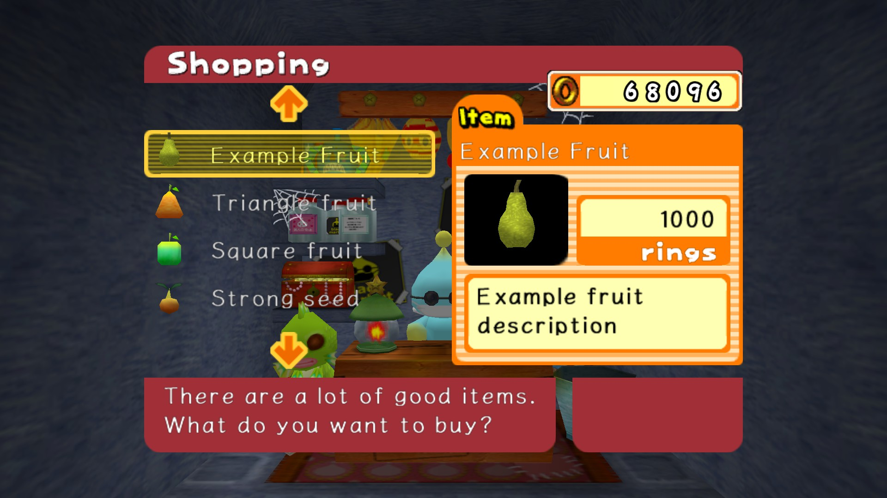Buy the fruit you made, and give it to a Chao to eat. If everything was successful, the Chao would gain the stats from stats struct, as well as gain the attributes from your custom function (if you set it).
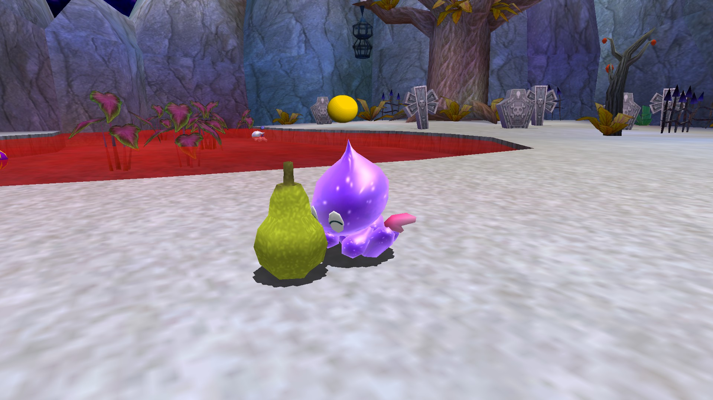Make any adjustments that you want to make to your fruit by repeating the steps you don't feel happy with, rinse, wash and repeat. You now know how to create yummy custom fruit for your Chao!
This section involves a few troubleshooting steps for where issues may arise. A few errors may occur when making a custom hat, and you may get stuck for a while.
This is caused by three issues:
Make sure your texture is correctly assigned to the model in Blender, and make sure that in TextureEditor your texture has a unique value in the Global Index field.
You've somehow reached the shared Black Market limit of 255 items of the fruit type. Remove some mods and try again.